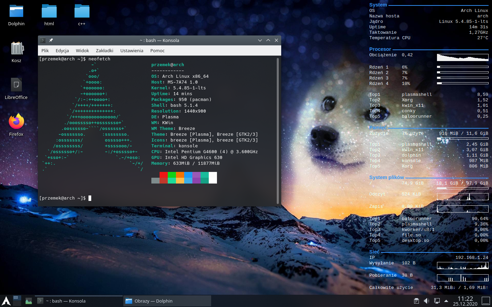

Alan Abramowski
Klasa 1 TIF
Linux – rodzina uniksopodobnych systemów operacyjnych opartych na jądrze Linux. Linux jest jednym z przykładów wolnego i otwartego oprogramowania (FLOSS): jego kod źródłowy może być dowolnie wykorzystywany, modyfikowany i rozpowszechniany. Od kwietnia 2017 roku Android (a tym samym Linux) oficjalnie jest najpopularniejszym systemem operacyjnym na świecie.
Pierwsza wersja jądra Linux została udostępniona publicznie 17 września 1991 dla architektury komputera PC, wykorzystującego mikroprocesor o architekturze IA-32. Do jądra dołączono narzędzia systemowe zwane też „Development Kit” oraz biblioteki z projektu GNU, aby otrzymać nadający się do użytku system operacyjny. Z tego powodu powstała też alternatywna nazwa kompletnego systemu: GNU/Linux. Obecnie jest on udostępniany w formie licznych dystrybucji Linuksa, które składają się z jądra (niekiedy zmodyfikowanego w stosunku do oficjalnej wersji) i zestawu pakietów oprogramowania dobranego do różnorodnych wymagań. Dystrybucje zawierają głównie oprogramowanie na licencjach FLOSS, jednak najczęściej zawierają też lub pozwalają na łatwe doinstalowanie pewnej liczby programów na licencjach własnościowych.
Jednym z zastosowań Linuksa są środowiska serwerowe, dla których komercyjne wsparcie oferują również duże firmy komputerowe jak IBM, Oracle, Dell, Microsoft, Hewlett-Packard, Red Hat i Novell. Linux działa na szerokiej gamie sprzętu komputerowego, wliczając komputery biurkowe, superkomputery i systemy wbudowane, takie jak telefony komórkowe, routery oraz telewizory.
